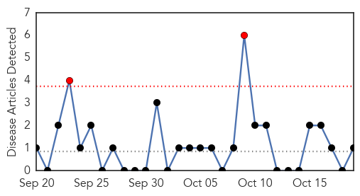
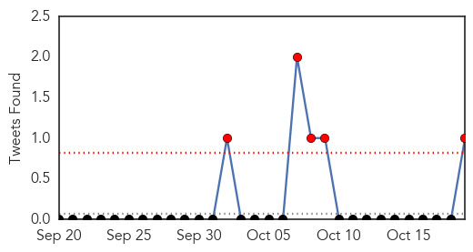
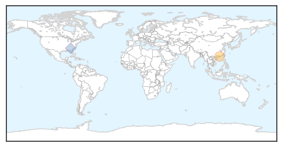
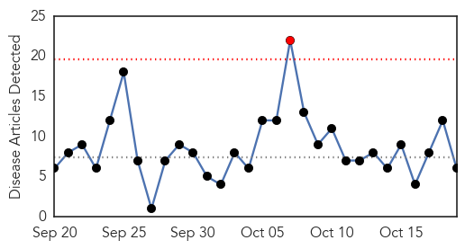
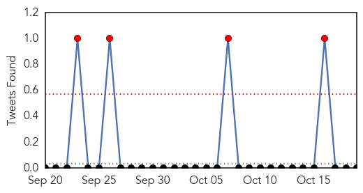
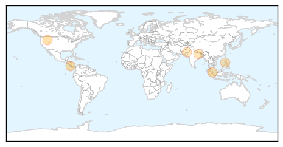
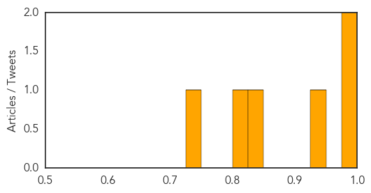

Swine Flu
30-Day Web Trend
2 alerts, 0 warnings

30-Day Twitter Trend
5 alerts, 0 warnings

Article Locations
Article Confidences

Top Articles:
Top Tweets:
- 0.978
- • We do not shut our borders to countries affected by Ebola; didn’t w/ SARS or pandemic H1N1 flu.
Dengue Fever
30-Day Web Trend
1 alerts, 0 warnings

30-Day Twitter Trend
1 alerts, 2 warnings

Article Locations
Article Confidences
Top Articles:
- 0.992
- Costa Rica confirms first chikunguña case originating in country
- 0.982
- Fever cases on the rise in Puducherry
- 0.944
- South China dengue outbreak at 37,000 cases, Wolbachia bacteria may help in battling dengue
- 0.833
- Breakthrough seen in dengue treatment
- 0.824
- Birgunj faces possible dengue outbreak
- 0.740
- Indifference of related staff causing dengue fever spread
Top Tweets:
-
No tweets found for Oct 19, 2014